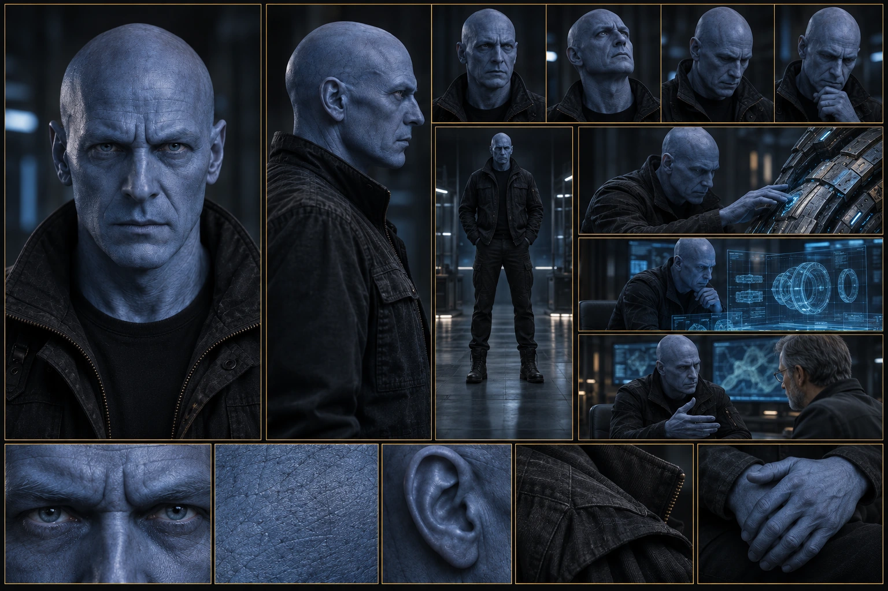

PROFILE
Research turned into protection
Noil works at a laboratory complex on the Zero Plan. He studies a Ragati module recovered from a Martian base and coordinates experimental work on a system whose operating principle human researchers do not initially understand. He verifies results and does not mistake a laboratory success for a battlefield-ready solution.
Role: Scientist and technology researcher
Workplace: Zero Plan laboratory complex
Research: Ragati technology and spatial defensive systems
Collaborators: Rita, Marko and the research and engineering team
Key development: Adaptive protective-field module
Appearance: Based on the approved visual reference — blue-grey skin, bald head, light eyes and dark clothing
Age, height and origin: Not established in the manuscripts
Kharakternyk status: Not confirmed by the text
RESEARCHING RAGATI TECHNOLOGY
An unfamiliar defensive system
The module recovered from a Ragati base on Mars by Evihid's team is delivered to the Zero Plan laboratory complex. Noil personally inspects it and authorizes its first controlled activation after scanning is complete. During the test, a faint blue distortion forms around the casing, and an armour-piercing projectile disappears a few centimetres before reaching the field boundary.
Further tests show that the system can neutralize kinetic impacts without producing a conventional shock wave. The researchers do not yet fully understand its operating principle, but recognize its potential.
WORKING WITH RITA
From a continuous field to coordinated sectors
Noil and Rita reconsider how the protective field is generated. The initial system attempted to maintain protection throughout the entire designated volume, consuming too much energy and creating a substantial thermal load.
The team moves to separate coordinated sectors: the system identifies where protection is needed and redistributes energy according to the current load. Rita proposes a solution for stabilizing the field boundaries, and Noil acknowledges her contribution. The improved module becomes more compact and can fit into a container about the size of a standard military backpack, although it remains heavy.
WORKING WITH MARKO
Protection for robotic platforms
Marko asks Noil whether the system could be used in combat. Noil explains that the field may alter the trajectory and reduce the impact of large, fast threats and kinetic strikes, but it has not yet been tested in real combat.
The module is still too heavy for infantry: an exoskeleton does not solve the problems of power supply, cooling and sustained operation. Marko's robots, however, can carry the weight and integrate the module with their own power and cooling systems. Noil and Rita work on adapting the design to different robot bodies.
Noil stresses that this is not yet a finished combat system. The team must test different loads, trial it while moving, determine how it performs under prolonged fire and prepare for serial production. Marko agrees to continue without sacrificing reliability for speed.
REFERENCE
Limits of the established canon
Confirmed by the manuscripts
- Noil is a scientist at the Zero Plan laboratory complex.
- He studies a Ragati module recovered from a Martian base by Evihid's team.
- He and Rita improve the method used to generate the protective field.
- He works with Marko on adapting the module for robotic platforms.
- He insists on testing and reliability before serial production.
Details taken from the visual reference
Blue-grey skin, a bald head, light eyes and dark clothing. The manuscripts do not establish his species or origin.
What remains unknown
Noil's exact age, height, origin, family ties and personal history are not established. The manuscripts also do not confirm that he is a kharakternyk.
Appearances in the books
In the third supplied book: research on the Ragati module at the Zero Plan laboratory complex, followed by joint work with Rita and Marko to adapt the protective field. No separate Noil storyline was identified in the other supplied manuscripts.